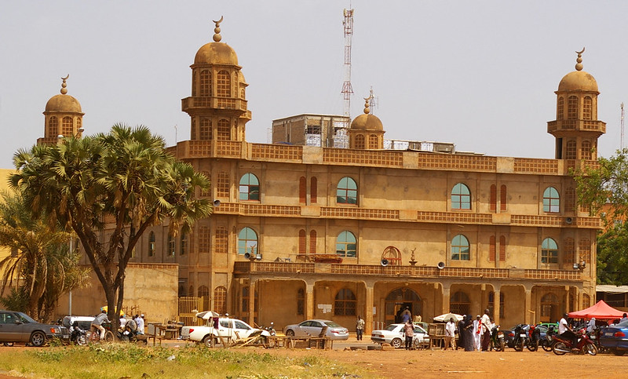

DESCRIPTION DE LA GRANDE MOSQUEE DE OUAGADOUGOU
: Le monument est reconnaissable à ses 4 grands minarets élancés qui dominent le paysage urbain du centre-ville, ses 114 poteaux intérieurs soutenant la structure et son dôme central unique. : L'ensemble du site couvre une emprise globale de 7 000 m² (incluant la cour extérieure), tandis que la grande salle de prière initiale mesurait 1 925 m². Suite aux campagnes successives d'agrandissement, sa salle principale s'étend désormais sur près de 3 400 m².
HISTORIQUE DE LA GRANDE MOSQUEE DE OUAGADOUGOU
- 1952 (Les Origines)
- 1973 – 1979 (La Modernisation)
- 2005 à nos jours (Les Agrandissements)
: Une première structure en maçonnerie (en dur) est édifiée pour doter la communauté musulmane naissante d'un lieu de culte pérenne. Avant cela, l'islam à Ouagadougou s'était historiquement structuré à partir de la cour royale sous le règne du souverain mossi Naba Doulougou (1783-1802).
: Face à l'insuffisance du premier édifice, d'importants travaux de reconstruction totale sont lancés. Cette grande mosquée moderne est entièrement financée par le célèbre opérateur économique et grand mécène du pays, El Hadji Oumarou Kanazoé. Elle est officiellement inaugurée le 20 avril 1979 sous le haut patronage du Chef de l'État, le Général Aboubacar Sangoulé Lamizana, en présence des plus hautes autorités politiques et coutumières du pays (dont le Mogho Naba).
Une troisième phase majeure de rénovation et d'extension débute en 2005 afin d'adapter l'infrastructure à l'explosion démographique de la ville.
La Grande Mosquée Centrale de Ouagadougou (Mosquée Centrale de la Communauté Musulmane) est la première mosquée construite en dur dans la capitale burkinabè.
- Emplacement: situé à Koulouba
- Horaires: Ouvrables 7j/7
- Accès: Tous publics
- Géolocalisation: Voir la Grande Mosquée de Ouagadougou sur Google Maps